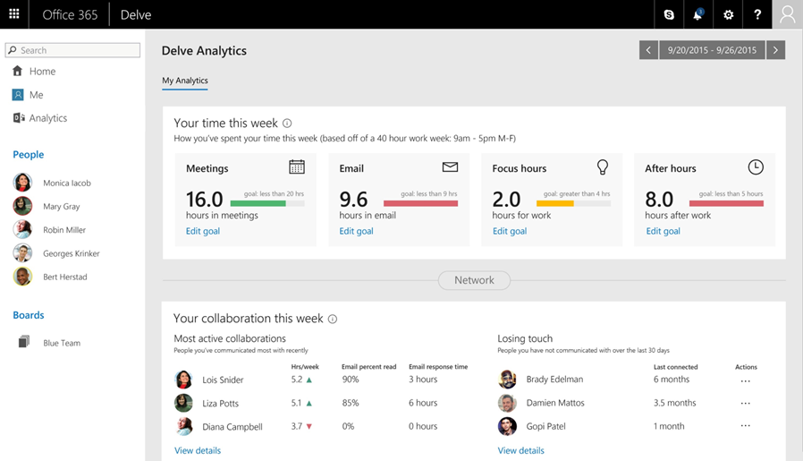

Note: In order to access the demo described below, open Internet Explorer and navigate to http://localhost:4200 from a CIE 8.5.1 or higher client image.
Often, employees are overwhelmed with meetings and email and are unable to determine where all of their time is going. Now, with Delve Analytics, organizations can empower their employees to increase their productivity through rich dashboards that help them understand how they use their time. Delve Analytics provides perspective about the way users work through big data and behavioral analytics, including time management, network analysis and influence and reach indicators.
With Delve Analytics, users will receive a weekly report that displays the amount of time they spend in meetings and email, their focus time, and the number of hours they spend working outside of the normal work day. Each of these are tracked against goals that they've set for themselves, allowing them to understand their progress and make improvements. The report also highlights the quality of their meetings each week and even shows how they're engaging with their work network. New productivity tips are included in every report, so they're consistently receiving recommendations to help be more productive at work.
Individual analytics
Individual workers can use the personal work analytics dashboard to understand highest impact activities, including email reach, time by category and focus time. By having access to an easy-to-understand dashboard, employees have tools at their fingertips to help them effortlessly create goals and monitor progress to improve their work habits. Metrics included within the personal dashboard are:
•Analytics regarding time spent in meetings, on email, etc. by week
•Analytics comparing time usage with company trends
•Insights into relationships with others in the organization

Similar to how fitness trackers help us understand our personal health, Delve Analytics provides objective measurements about our professional activities to help us prioritize our time at work.
By viewing the personal work analytics dashboard, users are presented with a summary of the their personal time and network.
There is tremendous potential in this new area of personal productivity tools where users can explore and react to their behavioral and collaboration data. This information enables personalized feedback loops that help the user answer questions like:
Am I spending my time on the right priorities?
Who am I spending the most time collaborating with and are they the right people to help me get my job done?
By focusing on the areas of work that demand the most, like meetings and email, the user can understand how to allocate time for maximum impact in his or her roles.
Team analytics
Not only will individual performance improve, but teams can identify areas to save time and focus on the highest value activities. Team managers can use the team dashboard to understand how team members spend their day (by category) and who is considered a "top collaborator" across the organization.
Set work goals
The Delve Analytics dashboard becomes even more effective when users create personalized goals for different aspects of the work week.
To improve our efficiency in the office, the user can aim to reduce time spent in unnecessary meetings and email and increase his or her hours of focus time every day, so that he or she can concentrate on the work that really matters.
The user can also apply goals to his or her afterhours work in order to ensure that he or she can maintain his or her personal life while balancing work demands.
After clicking on edit goal under meetings, the user can quickly set his or her weekly meetings hours goal to 15 instead of 20.

Maintain work relationships
Relationships are hugely important to professional success and provide quick insights into the user's relationships that matter most. Delve Analytics allows users to better understand how to engage with each of their top connections and also see with who, they might be losing touch.
Users can quickly explore these relationships more closely by clicking the "View details" link. This module shows how much time users dedicate to each top connection, along with details about the working relationship. Related, the "View details" under "Losing touch" will show the user how much time has passed since connecting with other colleagues and provides options for reconnecting.
Reporting
The meeting and email modules provide a drill down on current and historical views of a user's collaboration activity.
These reports also highlight how users compare to a group benchmark and their personalized goals, along with meeting and email effectiveness statistics.
Each of these modules contains detailed views that provide additional information. The Meetings module explores options for improving meeting quality based on duration, attendance, and other characteristics while the Email module shows historical communication activity.
This data provides real feedback into everyday effectiveness that can be used to tune efforts for higher impact.
The "Focus" and "After hours" modules display information in a similar format, providing simple visualizations of time allocation along with anonymized benchmarking.
While Delve Analytics is currently in the E5 SKU that is built into the CIE 8.5 environment, it has a 90-day data collection requirement, thus is unable populate in the CIE environment. However, feel free to discuss this new productivity feature with participants at any time in the session.